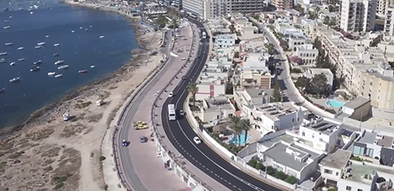

Notícias Nacionais de Malta
sexta-feira, 23 de junho de 2017, 17 : 26
Projeto de 3,5 milhões de euros concluído em Qawra / Buġibba
Um projeto de 3,5 milhões de euros para melhorar as avenidas de Buġibba e Qawra foi concluído, disse a Transport Malta.
A autoridade disse que aplicou 42 mil metros quadrados de asfalto em 4,32 km de avenidas em uma importante região de malta, a tempo da principal temporada turística. O trabalho foi feito nos finais de semana, feriados e em eventos de hotéis para minimizar a interrupção.
Além das obras rodoviárias, os empreiteiros substituíram inúmeras conexões de bairro e pintaram novas sinalizações de rua.
O investimento é o primeiro custeado pelas novas contribuições ecológicas, pagas pelo turista. Esta obra foi realizada com a assistência do Ministério do Turismo e da Associação de Hotéis e Restaurantes de Malta.